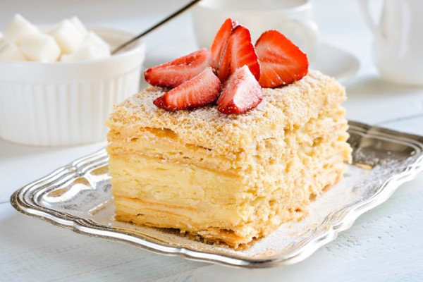
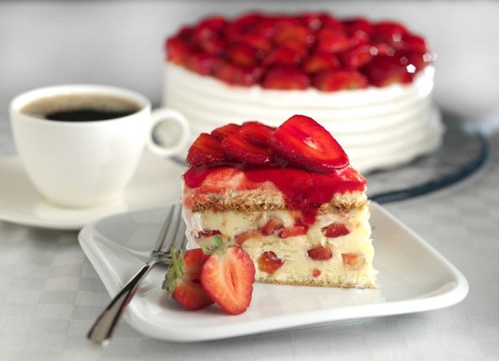

Prague
«Пра́га» — шоколадный торт, который состоит из трёх бисквитных коржей с двумя слоями крема «Пражский». Верхняя и боковые поверхности покрыты повидлом и заглазированы помадкой.
Napoleon
Слоенный торт с маслянным кремом (кремовой помадкой). Подается с клубникой.
Cheesecake Ferrero Rocher
Невероятный ореховый чизкейк со вкусом знаменитых конфеток Ферреро Роше. Шоколадный со вкусом фундука на шоколадной основе из теста Сабле.
Strawberry cake
Легкий, нежный бисквитный торт с мягкой сливочно-ванильной «сердцевиной», украшенный кисло-сладкими свежими летними ягодами
Blueberry cake
Влажные терпкие шоколадно-кофейные коржи и плотный ягодный крем создали удивительный тандем вкуса. Подается со свежей ягодой.
Lemon cake
Лимонный торт из ванильных бисквитов с нежным кремом и лимонной цедрой. Королевская прослойка нежного лимонного крема, тоненький бисквит и пышная меренговая шапка сверху унесут Вас на юг Италии и подарят настоящий восторг!